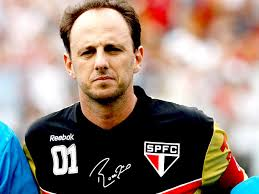

Como Jogador
- Melhor Goleiro do Mundo - (RSSSF - Rec.Sport.Soccer Statistics Foundation): 2005 [104]
- 4º Melhor Goleiro do Mundo - (Ballon d'Or/France Football): 2007
- Melhor Goleiro da América do Sul (IFFHS): 2005, 2006 e 2007
- Goleiro Ideal da América do Sul (El País, Uruguai): 2005 e 2006
- Bola de Ouro do Mundial de Clubes da FIFA: 2005
- Melhor jogador da final do Mundial de Clubes da FIFA - Chave de Ouro Toyota: 2005
- Melhor Jogador da Copa Libertadores da América: 2005
- Melhor Jogador da final da Copa Libertadores da América - Chave de Ouro Toyota: 2005
- Melhor Goleiro da Copa Libertadores da América: 2005
- Melhor Goleiro da Copa Sul-Americana: 2014
- Bola de Ouro (Placar): 2008
- Melhor jogador do Campeonato Brasileiro: 2006 e 2007
- Craque da Torcida: 2007 e 2014
- Bola de Prata (Placar): 2000, 2003, 2004, 2006, 2007 e 2008
- Melhor Goleiro do Brasil: 2002, 2003, 2005 e 2006 - RSSSF
- Seleção Ideal do Brasil: 2002, 2003, 2005 e 2006 - RSSSF
- Melhor Goleiro do Campeonato Brasileiro (Troféu Mesa Redonda): 2004, 2005, 2006 e 2007
- Melhor Goleiro do Campeonato Paulista: 2005 e 2011
- 10º Melhor Jogador do Mundo - (RSSSF - Rec.Sport.Soccer Statistics Foundation): 2005
- 27º Melhor jogador do mundo- (Ballon d'Or/France Football): 2007
- 9º Melhor goleiro do mundo (Federação Internacional de História e Estatística do Futebol - IFFHS): 2005
- 6º Melhor goleiro do mundo (Federação Internacional de História e Estatística do Futebol - IFFHS): 2006
- 5º Melhor goleiro do mundo (Federação Internacional de História e Estatística do Futebol - IFFHS): 2007
- 11º Melhor goleiro do mundo (Federação Internacional de História e Estatística do Futebol - IFFHS): 2008
- 13º Melhor goleiro do mundo (Federação Internacional de História e Estatística do Futebol - IFFHS) da década: (2001 - 2009)
Como tecnico
- Troféu Verdes Mares - Melhor treinador do Campeonato Cearense: 2019
- Melhor Técnico do ano no futebol cearense: 2019